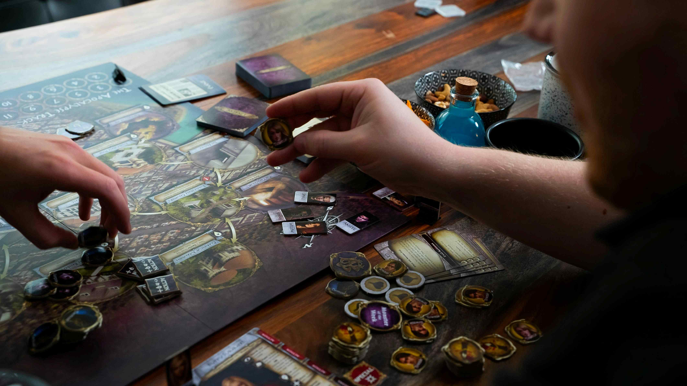
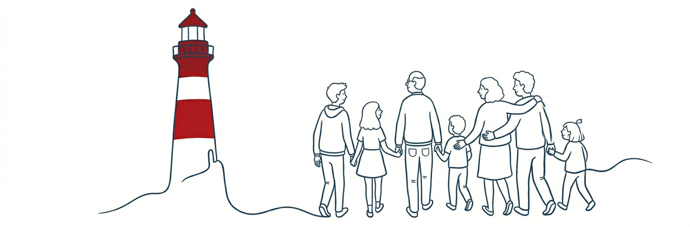

Inovāciju prakses centrs Osta
Mēs esam vietēja, bezpeļņas organizācija Jelgavā, kas piedāvā inovatīvus pakalpojumus vietējās kopienas iedzīvotājiem, īpašu uzmanību pievēršot jauniešiem. Mēs ticam, ka vietējās kopienas ir kā resursu oāze cilvēkiem, kuri vēlas uzlabot savu dzīvi un veidot ciešas, jēgpilnas attiecības ar apkārtējiem.
Vairāk par mumsKo mēs daram
Jaunākie ieraksti blogā
-
Publicēti projekta “Atlabšanas ceļvedis” izpētes un praktiskie materiāli
Projekta lapā pieejami divi literatūras pārskati un trīs materiāli līdzinieka sagatavošanai. Tie ir pamats pakalpojuma izstrādei un sagatavošanai pirms tā izmēģināšanas.
-
IPC “Osta” uzsāk projektu “Atlabšanas ceļvedis”.
Izstrādāsim un izmēģināsim jaunu sabiedrībā balstītu atbalsta pakalpojumu cilvēkiem stabilā atlabšanas procesā.